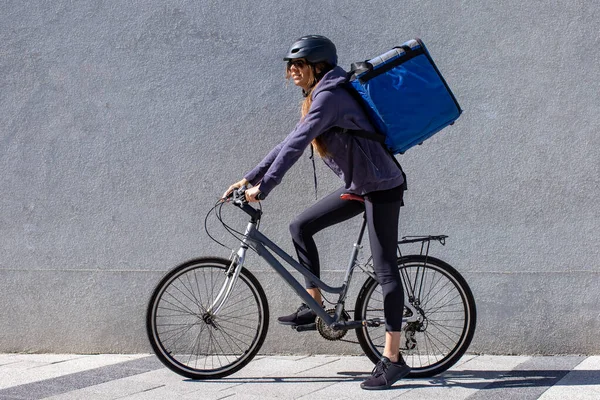

Repartos más ecológicos
En QuickEat queremos que disfrutar de una buena comida también pueda hacerse pensando en el entorno. Por eso, nuestros servicios se centran en repartir comida de forma más ecológica y en evitar, siempre que sea posible, métodos de transporte que contaminen.

Un trayecto más responsable
Promovemos alternativas de reparto de menor impacto, como desplazarse a pie o en bicicleta cuando la distancia y las condiciones lo permiten. Así ayudamos a llevar los pedidos a nuestros clientes mientras fomentamos una forma de entrega más respetuosa con la ciudad.